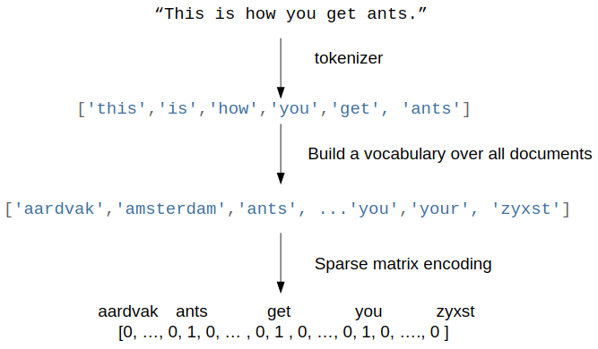

scikit-笔记10:用词袋模型进行文本特征解析
Table of Contents
%matplotlib inline import matplotlib.pyplot as plt import numpy as np
1 Methods - Text Feature Extraction with Bag-of-Words
build vocabulary: fit(means building model):
- obj.fit(sentence_data_base)
from sklearn.feature_extraction.text import CountVectorizer vectorizer = CountVectorizer(min_df=1) vectorizer.fit([ "The cat sat on the mat.", "The quick brown fox jumps over the lazy dog.", ]) vectorizer.vocabulary_
{'brown': 0,
'cat': 1,
'dog': 2,
'fox': 3,
'jumps': 4,
'lazy': 5,
'mat': 6,
'on': 7,
'over': 8,
'quick': 9,
'sat': 10,
'the': 11}
apply vocabulary: after fit(means model built finished):
- model.vocabulary_ : a dict with item format 'word': num_occurence .
- model.get_feature_names : like the keys of this dict
- model.transform : return the train data point, num_occurence of each word in each sample.
X = vectorizer.transform([ "The cat sat on the mat.", "This cat is a nice cat.", ]).toarray() print(len(vectorizer.vocabulary_)) print(vectorizer.get_feature_names()) print(X)
>>> bag_of_words
In many tasks, like in the classical spam detection, your input data is text. Free text with variables length is very far from the fixed length numeric representation that we need to do machine learning with scikit-learn.
However, there is an easy and effective way to go from text data to a numeric representation using the so-called bag-of-words model, which provides a data structure that is compatible with the machine learning aglorithms in scikit-learn.
>>> steps to build bag_of_words 
Let's assume that each sample in your dataset is represented as one string, which could be just a sentence, an email, or a whole news article or book. To represent the sample, we :
- first split the string into a list of tokens, which correspond to (somewhat normalized) words. A simple way to do this to just split by whitespace, and then lowercase the word.
- Then, we build a vocabulary of all tokens (lowercased words) that appear in our whole dataset. This is usually a very large vocabulary.
- Finally, looking at our single sample, we could show how often each word in the vocabulary appears. We represent our string by a vector, where each entry is how often a given word in the vocabulary appears in the string.
>>> traits of bag_of_words model As each sample will only contain very few words, most entries will be zero, leading to a very high-dimensional but sparse representation.
The method is called "bag-of-words," as the order of the words is lost entirely.
X = ["Some say the world will end in fire,", "Some say in ice."] len(X)
2
>>> general usage of ML model
- class to obj : CountVectorizer()
- obj to model : CountVectorizer().fit(X)
- model attrs and methods: CountVectorizer().fit(X).vocabulary_
>>> create obj, and obj to model
from sklearn.feature_extraction.text import CountVectorizer vectorizer = CountVectorizer() vectorizer.fit(X)
CountVectorizer(analyzer='word', binary=False, decode_error='strict', dtype=<class 'numpy.int64'>, encoding='utf-8', input='content', lowercase=True, max_df=1.0, max_features=None, min_df=1, ngram_range=(1, 1), preprocessor=None, stop_words=None, strip_accents=None, token_pattern='(?u)\\b\\w\\w+\\b', tokenizer=None, vocabulary=None)
>>> attributes of CountVectorizer model
vectorizer.vocabulary_
{'end': 0,
'fire': 1,
'ice': 2,
'in': 3,
'say': 4,
'some': 5,
'the': 6,
'will': 7,
'world': 8}
>>> methods of CountVectorizer model
X_bag_of_words = vectorizer.transform(X)
X_bag_of_words.shape
(2, 9)
X_bag_of_words
<2x9 sparse matrix of type '<class 'numpy.int64'>' with 12 stored elements in Compressed Sparse Row format>
X_bag_of_words.toarray()
array([[1, 1, 0, 1, 1, 1, 1, 1, 1], [0, 0, 1, 1, 1, 1, 0, 0, 0]])
vectorizer.get_feature_names()
['end', 'fire', 'ice', 'in', 'say', 'some', 'the', 'will', 'world']
vectorizer.inverse_transform(X_bag_of_words)
[array(['end', 'fire', 'in', 'say', 'some', 'the', 'will', 'world'], dtype='<U5'), array(['ice', 'in', 'say', 'some'], dtype='<U5')]
1.1 tf-idf Encoding
A useful transformation that is often applied to the bag-of-word encoding is the so-called term-frequency inverse-document-frequency (tf-idf) scaling, which is a non-linear transformation of the word counts.
The tf-idf encoding rescales words that are common to have less weight:
>>> class to obj, obj to model
from sklearn.feature_extraction.text import TfidfVectorizer tfidf_vectorizer = TfidfVectorizer() tfidf_vectorizer.fit(X)
TfidfVectorizer(analyzer='word', binary=False, decode_error='strict', dtype=<class 'numpy.int64'>, encoding='utf-8', input='content', lowercase=True, max_df=1.0, max_features=None, min_df=1, ngram_range=(1, 1), norm='l2', preprocessor=None, smooth_idf=True, stop_words=None, strip_accents=None, sublinear_tf=False, token_pattern='(?u)\\b\\w\\w+\\b', tokenizer=None, use_idf=True, vocabulary=None)
import numpy as np np.set_printoptions(precision=2) print(tfidf_vectorizer.transform(X).toarray())
>>> what is a tfidf tf-idfs are a way to represent documents as feature vectors. tf-idfs can be understood as a modification of the raw term frequencies (tf); the tf is the count of how often a particular word occurs in a given document.
The concept behind the tf-idf is to downweight terms proportionally to the number of documents in which they occur.
Here, the idea is that terms that occur in many different documents are likely unimportant or don't contain any useful information for Natural Language Processing tasks such as document classification. If you are interested in the mathematical details and equations, see this external IPython Notebook that walks you through the computation.
1.2 Bigrams and N-Grams: general tokenization
2-Grams: 2 front words infer the 3rd word N-Grasm: N fromt words infer the 3rd word
1.2.1 what is n-grams
In the example illustrated in the figure at the beginning of this notebook, we used the so-called 1-gram (unigram) tokenization: Each token represents a single element with regard to the splitting criterion.
1.2.2 why we need n-grams
Entirely discarding word order is not always a good idea, as composite phrases often have specific meaning, and modifiers like "not" can invert the meaning of words.
A simple way to include some word order are n-grams, which don't only look at a single token, but at all pairs of neighborhing tokens. For example, in 2-gram (bigram) tokenization, we would group words together with an overlap of one word; in 3-gram (trigram) splits we would create an overlap two words, and so forth:
- original text: "this is how you get ants"
- 1-gram: "this", "is", "how", "you", "get", "ants"
- 2-gram: "this is", "is how", "how you", "you get", "get ants"
- 3-gram: "this is how", "is how you", "how you get", "you get ants"
Which "n" we choose for "n-gram" tokenization to obtain the optimal performance in our predictive model depends on the learning algorithm, dataset, and task. Or in other words, we have consider "n" in "n-grams" as a tuning parameters, and in later notebooks, we will see how we deal with these.
Now, let's create a bag of words model of bigrams using scikit-learn's CountVectorizer:
>>> create obj and conver to model by fit: this will create vocabulary and count the number of occurrence in each 'string'
>>> compare bigrams(2-grams) with unigrams(1-gram)
# look at sequences of tokens of minimum length 2 and maximum length 2 bigram_vectorizer = CountVectorizer(ngram_range=(2, 2)) from sklearn.feature_extraction.text import CountVectorizer vectorizer = CountVectorizer() vectorizer.fit(X), bigram_vectorizer.fit(X)
(CountVectorizer(analyzer='word', binary=False, decode_error='strict', dtype=<class 'numpy.int64'>, encoding='utf-8', input='content', lowercase=True, max_df=1.0, max_features=None, min_df=1, ngram_range=(1, 1), preprocessor=None, stop_words=None, strip_accents=None, token_pattern='(?u)\\b\\w\\w+\\b', tokenizer=None, vocabulary=None), CountVectorizer(analyzer='word', binary=False, decode_error='strict', dtype=<class 'numpy.int64'>, encoding='utf-8', input='content', lowercase=True, max_df=1.0, max_features=None, min_df=1, ngram_range=(2, 2), preprocessor=None, stop_words=None, strip_accents=None, token_pattern='(?u)\\b\\w\\w+\\b', tokenizer=None, vocabulary=None))
bigram_vectorizer.get_feature_names(), vectorizer.get_feature_names()
>>> what is the tokenization
(['end in', 'in fire', 'in ice', 'say in', 'say the', 'some say', 'the world', 'will end', 'world will'], ['end', 'fire', 'ice', 'in', 'say', 'some', 'the', 'will', 'world'])
>>> representation of samples(here, 1 row 1 sample)
bigram_vectorizer.transform(X).toarray(), X_bag_of_words.toarray()
(array([[1, 1, 0, 0, 1, 1, 1, 1, 1], [0, 0, 1, 1, 0, 1, 0, 0, 0]]), array([[1, 1, 0, 1, 1, 1, 1, 1, 1], [0, 0, 1, 1, 1, 1, 0, 0, 0]]))
>>> combine unigrams with bigrams This will give a lone vector representation for each sample(string).
Often we want to include unigrams (single tokens) AND bigrams, wich we can do by
passing the following tuple as an argument to the ngram_range parameter of the
CountVectorizer function:
gram_vectorizer = CountVectorizer(ngram_range=(1, 2)) gram_vectorizer.fit(X)
CountVectorizer(analyzer='word', binary=False, decode_error='strict', dtype=<class 'numpy.int64'>, encoding='utf-8', input='content', lowercase=True, max_df=1.0, max_features=None, min_df=1, ngram_range=(1, 2), preprocessor=None, stop_words=None, strip_accents=None, token_pattern='(?u)\\b\\w\\w+\\b', tokenizer=None, vocabulary=None)
gram_vectorizer.get_feature_names()
['end', 'end in', 'fire', 'ice', 'in', 'in fire', 'in ice', 'say', 'say in', 'say the', 'some', 'some say', 'the', 'the world', 'will', 'will end', 'world', 'world will']
gram_vectorizer.transform(X).toarray()
array([[1, 1, 1, 0, 1, 1, 0, 1, 0, 1, 1, 1, 1, 1, 1, 1, 1, 1], [0, 0, 0, 1, 1, 0, 1, 1, 1, 0, 1, 1, 0, 0, 0, 0, 0, 0]])
1.3 Character n-grams
Sometimes it is also helpful not only to look at words, but to consider single characters instead.
That is particularly useful if we have very noisy data and want to identify
the language, or if we want to predict something about a single word. We can
simply look at characters instead of words by setting analyzer="char". Looking
at single characters is usually not very informative, but looking at longer
n-grams of characters could be:
X
['Some say the world will end in fire,', 'Some say in ice.']
char_vectorizer = CountVectorizer(ngram_range=(2, 2), analyzer="char") char_vectorizer.fit(X)
CountVectorizer(analyzer='char', binary=False, decode_error='strict', dtype=<class 'numpy.int64'>, encoding='utf-8', input='content', lowercase=True, max_df=1.0, max_features=None, min_df=1, ngram_range=(2, 2), preprocessor=None, stop_words=None, strip_accents=None, token_pattern='(?u)\\b\\w\\w+\\b', tokenizer=None, vocabulary=None)
print(char_vectorizer.get_feature_names()) print(len(char_vectorizer.get_feature_names())) # 35
EXERCISE: Compute the bigrams from "zen of python" as given below (or by import this), and find the most common trigram. We want to treat each line as a separate document. You can achieve this by splitting the string by newlines (\n). Compute the Tf-idf encoding of the data. Which words have the highest tf-idf score? Why? What changes if you use TfidfVectorizer(norm="none")?
zen = """Beautiful is better than ugly. Explicit is better than implicit. Simple is better than complex. Complex is better than complicated. Flat is better than nested. Sparse is better than dense. Readability counts. Special cases aren't special enough to break the rules. Although practicality beats purity. Errors should never pass silently. Unless explicitly silenced. In the face of ambiguity, refuse the temptation to guess. There should be one-- and preferably only one --obvious way to do it. Although that way may not be obvious at first unless you're Dutch. Now is better than never. Although never is often better than *right* now. If the implementation is hard to explain, it's a bad idea. If the implementation is easy to explain, it may be a good idea. Namespaces are one honking great idea -- let's do more of those!"""
2 Misc tools
2.1 Scikit-learn
2.1.1 ML models by now
- from sklearn.datasets import make_blobs
- from sklearn.datasets import load_iris
- from sklearn.model_selection import train_test_split
- from sklearn.linear_model import LogisticRegression
- from sklearn.linear_model import LinearRegression
- from sklearn.neighbors import KNeighborsClassifier
- from sklearn.neighbors import KNeighborsRegressor
- from sklearn.preprocessing import StandardScaler
- from sklearn.decomposition import PCA
- from sklearn.metrics import confusion_matrix, accuracy_score
- from sklearn.metrics import adjusted_rand_score
- from sklearn.cluster import KMeans
- from sklearn.cluster import KMeans
- from sklearn.cluster import MeanShift
- from sklearn.cluster import DBSCAN # <<< this algorithm has related sources in LIHONGYI's lecture-12
- from sklearn.cluster import AffinityPropagation
- from sklearn.cluster import SpectralClustering
- from sklearn.cluster import Ward
- from sklearn.metrics import confusion_matrix
- from sklearn.metrics import accuracy_score
- from sklearn.metrics import adjusted_rand_score
- from sklearn.feature_extraction import DictVectorizer
- from sklearn.feature_extraction.text import CountVectorizer *
- from sklearn.feature_extraction.text import TfidfVectorizer *
- from sklearn.preprocessing import Imputer
- from sklearn.dummy import DummyClassifier
2.1.2 ML fn in this notes
2.1.3 CountVectorizer
CountVectorizer implements both tokenization and occurrence counting in a single class
2.1.3.1 Ctor parameters
CountVectorizer(input=’content’, # sequence of 'filepath', 'string' encoding=’utf-8’, decode_error=’strict’, strip_accents=None, lowercase=True, preprocessor=None, tokenizer=None, # user-defined method to get token stop_words=None, token_pattern=’(?u)\b\w\w+\b’, # regex to filt the 'word' token ngram_range=(1, 1), # the range of n-grams, '(min=2,max=2)' means 2-grams analyzer=’word’, # string, unit of one gram, can be 'word' or 'char' max_df=1.0, # filt out the token frequency > max_df min_df=1, # filt out the token frequency < min_df max_features=None, # only get top {max_features}th frequent token vocabulary=None, # specify what are the words you care about binary=False, # frequency will be 0 or 1, binary values dtype=<class ‘numpy.int64’>)
2.1.3.2 attributes
| attributes | description |
|---|---|
| vocabulary_ | dict, A mapping of terms to feature indices. |
| stop_words_ | set, Terms that were ignored because they either: |
| - occurred in too many documents (max_df) | |
| - occurred in too few documents (min_df) | |
| - were cut off by feature selection (max_features). |
2.1.3.3 Methods
| method | description |
|---|---|
| build_analyzer() | Return a callable that handles preprocessing and tokenization |
| build_preprocessor() | Return a function to preprocess the text before tokenization |
| build_tokenizer() | Return a function that splits a string into a sequence of tokens |
| decode(doc) | Decode the input into a string of unicode symbols |
| fit(raw_documents[, y]) | Learn a vocabulary dictionary of all tokens in the raw documents. |
| fit_transform(raw_documents[, y]) | Learn the vocabulary dictionary and return term-document matrix. |
| get_feature_names() | Array mapping from feature integer indices to feature name |
| get_params([deep]) | Get parameters for this estimator. |
| get_stop_words() | Build or fetch the effective stop words list |
| inverse_transform(X) | Return terms per document with nonzero entries in X. |
| set_params(**params) | Set the parameters of this estimator. |
| transform(raw_documents) | Transform documents to document-term sparse matrix(csr_matrix). |